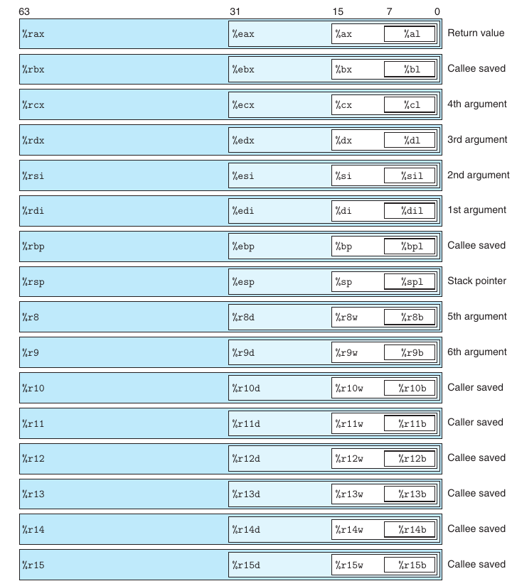

2. instructions
$\global\def\imm{\mathit{Imm}}$ $\global\def\r{\mathrm{r}}$ $\global\def\M{\mathrm{M}}$ $\global\def\R{\mathrm{R}}$ $\global\def\rsp{\mathtt{\%rsp}}$
1. 数据类型🧐
(1). 数据格式🧐
由于 Intel 是从 16 位机器做起，用 字 (word) 表示 16 bit 数据类型，称 32 位数为 双字，称 64 位数为四字 (quad words)。
| C 声明 | Intel 数据类型 | 汇编后缀 | 字节 |
|---|---|---|---|
char |
byte | b | 1 |
short |
word | w | 2 |
int |
double words | l | 4 |
long |
quad words | q | 8 |
char* |
quad words | q | 8 |
float |
single precision | s | 4 |
double |
double precision | l | 8 |
后缀 l 表示双字是因为 32 位数被看成长字 (long word)。由于浮点数使用完全不同的指令和寄存器，因此不会有歧义。
(2). 寄存器🧐
x86-64 的 cpu 包含一组 16 个存储 64 位值的通用寄存器。向后兼容的部分是由于从 8086 到 IA32 再到 x86-64 的演化，%r8 - %r15 是 x86-64 后新增的寄存器。
x86-64 registers

如果指令在寄存器中生成小于 8 byte 的结果:
- 1 字节或 2 字节: 保持剩下的位不变
- 4 字节: 把高位 4 字节置 0，这是由 IA32 到 x86-64 扩展时采用的
2. 基本指令🧐
(1). 操作数指示符🧐
| Form | Operand Value (s=1/2/4/8) | Name |
|---|---|---|
| $\text{\textdollar}\mathit{Imm}$ | $\imm$ | immediate |
| $\r_a$ | $R[\r_a ]$ | register |
| $\imm$ | $\mathrm{M}[\imm ]$ | absolute |
| $(\r_a)$ | $\mathrm{M[R[\r_a ]]}$ | indirect |
| $\imm(\r_b)$ | $\M[\imm +\R[\r_b ]]$ | Base + displacement |
| $(\r_b, \r_i)$ | $\M[\R[\r_b ] +\R[\r_i ]]$ | indexed |
| $\imm (\r_b, \r_i)$ | $\M[\imm+ \R[\r_b ] +\R[\r_i ]]$ | indexed |
| $(,\r_i, s)$ | $ \M[\R[\r_i ]\cdot s]$ | scaled indexed |
| ... | ... | ... |
操作数格式有三种:
- 立即数 (immediate): 表示常数，在 ATT 格式用 $ \text{\textdollar}$ 作为前缀，后接一个标准 C 表示法的整数
- 寄存器 (register): 表示寄存器中的内容，用 $\R[\r ]$ 引用其中的值
- 内存引用: 根据计算出来的地址访问某个内存位置，有多种寻址方式，基本形式为 $\imm(\r_b, \r_i, s)$，分别表示立即数偏移、基址寄存器、变址寄存器和比例因子，计算为 $\imm + \R[\r_b ] + \R[\r_i ] \cdot s$
(2). 数据传送指令🧐
最基本的传送指令是 MOV 类: mov S, D，把源数据复制到目的位置。
movb,movw,movl,movq，注意movl会把寄存器高位置 0movabsq I, R以任意四字的立即数作为源，且只能复制到寄存器
MOVZ 和 MOVS 类把较小的源复制到较大的目的处并做扩展，且目的只能是寄存器，例如:
movzbq: 将做了零扩展的字节传送到四字movswq: 将做了符号扩展的字传送到四字cltq: 把%eax符号扩展到%rax
由于 4 字节传送高位清 0 的特性，movzlq 并没有必要存在
(3). 栈操作🧐
x86-64 中，栈放在内存的某个区域，栈顶在低地址方向
| instructions | effect | equiv instr |
|---|---|---|
pushq S |
$\R[\rsp ] \leftarrow\R[\rsp ] - 8$ $\M[\R[ \rsp]] \leftarrow S$ |
subq $8, %rspmovq S, (%rsp) |
popq D |
$D \leftarrow \M[ \R[ \rsp]]$ $\R[\rsp ] \leftarrow \R[\rsp ] + 8$ |
movq (%rsp), Daddq $8, %rsp |
3. 算术和逻辑指令🧐
(1). 基本整数算术指令🧐
一元操作:
INC DDEC DNEG DNOT D
二元操作: D 既作为源又作为目的 $(\small\mathrm{D\ \leftarrow D\ \mathsf{op}\ S})$
ADD S, DSUB S, DIMUL S, DXOR S, DOR S, DAND S, D
移位操作: $(\small\mathrm{D\ \leftarrow D\ \mathsf{op}\ }k)$，当 $k$ 是一个单字节寄存器时，移位值为寄存器的低 $m$ 位 $(2^m = \mathit{bits})$。例如，当 $\R[ \mathtt{\%cl}]=\text{0xff}$，sall 会移 31 位
SAL k, DSHL k, D左移操作SAR k, DSHR k, D算术右移 和 逻辑右移
(2). 加载有效地址🧐
指令 leaq S, D (load effective address) 目的只能是寄存器，源只能是内存引用且获得的值是地址。它除了可以产生指针以外，还能用于加法和有限的乘法运算。
other usage of leaq
给定 C 程序:
long scale(long x, long y, long z) {
long t = x + 4 * y + 12 * z;
return t;
}
由 gcc -Og -S _.c 得到:
scale:
leaq (%rdi,%rsi,4), %rax ; x + 4 * y
leaq (%rdx,%rdx,2), %rdx ; z + 2 * z
leaq (%rax,%rdx,4), %rax ; (x + 4 * y) + 4 * (3 * z)
ret
4. 控制指令🧐
(1). 条件码🧐
cpu 维护一组单比特的 条件码寄存器，它们描述了最近的算术操作的属性，常用的有:
- CF: 进位标志；最近的操作使最高位产生了进位，可检测有符号数的溢出
- ZF: 零标志；最近的操作得到结果 0
- SF: 符号标志；最近的操作得到负数
- OF: 溢出标志；最近的操作导致补码正溢出或负溢出
除了 leaq 的所有上述算术指令都会设置条件码，例如，XOR 会把进位和溢出标志设为 0。
(2). CMP & TEST🧐
| instruction | base on | desciption |
|---|---|---|
CMP S1, S2 |
S2 - S1 | 比较 |
TEST S1, S2 |
S1 & S2 | 测试 |
CMP / TEST和SUB / AND的区别在于只设条件码不更新寄存器testq %rax, %rax可以检测%rax是否为正负零 (ZF、SF)，TEST指令还可用于掩码测试
(3). SET🧐
SET 指令的操作数是低位单字节寄存器或单字节内存，然后将这个位置设为 0 或 1。常用的有:
| instruction | synonym | effect | condition |
|---|---|---|---|
sete D |
setz |
D ← ZF |
equal |
setl D |
setnge |
D ← SF ^ OF |
less (signed) |
setb D |
setnae |
D ← CF |
below (unsigned) |
| ... | ... | ... | ... |
一段计算 a < b 的典型指令序列:
;a in %rdi, b in %rsi
comp:
cmpq %rsi, %rdi ;compare a:b
setl %al ;set low-order byte of %eax to 0 or 1
movzbl %al, %eax ;clear rest of %eax (and %rax)
ret
以 setl 为例，当 a-b 负溢出且 a<b，SF=0 且 OF=1；将所有情况组合即得到了 SF ^ OF
(4). 跳转指令🧐
跳转位置通常需要一个 Label 标明；jmp 的间接跳转通过操作数指定
| instruction | synonym | condition | description |
|---|---|---|---|
jmp Label |
1 | direct | |
jmp *Operand |
` | indirect | |
je Label |
jz |
ZF | equal / zero |
jne Label |
jnz |
~ZF | not equal / zero |
jg Label |
jnle |
~(SF ^ OF) & ~ZF | greater (signed) |
| ... | ... | ... | ... |
跳转指令有几种不同的编码，最常用的是 PC-relative:
movq %rdi, %rax
jmp .L2
.L3:
sarq %rax
.L2:
testq %rax, %rax
jg .L3
rep ret
0: 48 89 f8 mov %rdi, %rax
3: eb 03 jmp 8 <loop+0x8>
5: 48 d1 f8 sar %rax
8: 48 85 c0 test %rax, %rax
b: 7f f8 jg 5 <loop+0x5>
d: f3 c3 repz retq
反汇编文件的第一条跳转地址的编码为 0x03 (signed)，加上下一条指令的地址 0x5 (PC 的值)，得到目标地址 0x8 (由于历史原因，更新 PC 在执行指令前进行)。这种方式使得指令编码很简洁。
5. 基本语句🧐
(1). 条件分支🧐
条件语句在汇编中通常会翻译为 if false 的形式，例如 if-else:
if-else
if (<test-expr>)
<then-stmt>
else
<else-stmt>
t = <exp>;
if (!t)
goto false;
<then-stmt>
goto done;
false:
<else-stmt>
done:
现代处理器通过 pipeline 获得高性能，而通过基本的条件分支实现条件语句，由于分支预测可能出错，可能会低效。在某些情况下，可以通过条件传送指令避免。
long absdiff(long x, long y) {
long result;
if (x < y)
result = y - x;
else
result = x - y;
return result;
}
long cmovdiff(long x, long y) {
long rval = y - x;
long eval = x - y;
long ntest = x >= y;
/* Line below requires single instruction */
if (ntest) rval = eval;
return rval;
}
;x in %rdi, y in %rsi
absdiff:
movq %rsi, %rax
subq %rdi, %rax ;rval = y - x
movq %rdi, %rdx
subq %rsi, %rdx ;eval = x - y
cmpq %rsi, %rdi ;compare x:y
cmovge %rdx, %rax ;if >=, rval = eval
ret
条件传送并不适用于所有情况，如:
- 当
then-expr或else-expr需要大量的计算 - 对于指针
xp，条件传送会改变(xp ? *xp : 0)的执行逻辑
(2). 循环🧐
循环通常翻译为如下形式:
loop
loop:
<body-stmt>;
t = <exp>;
if (t)
goto loop;
goto test;
loop:
<body-stmt>;
test:
t = <exp>;
if (t)
goto loop;
t = <exp>;
if (!t)
goto done;
loop:
<body-stmt>;
t = <exp>;
if (t)
goto loop;
done:
gcc -O1 通常采用 "guraded-do" 的形式翻译 while 循环: 判断初始条件，并把剩下的部分转换为 do-while 的形式；用这种策略方便编译器优化条件表达式。
(3). switch🧐
当开关数量较多且开关跨度较小时，gcc 会使用跳转表优化程序，其优点在于减少分支判断的时间。
example
void switchEg(long x, long n, long *dest) {
long val = x;
switch (n) {
case 100:
val *= 13;
break;
case 102:
val += 10;
/* Fall through */
case 103:
val += 11;
break;
case 104:
case 106:
val *= val;
break;
default:
val = 0;
}
*dest = val;
}
void switchEgImpl(long x, long n, long *dest) {
/* Table of code pointers */
static void *jt[7] = {
&&loc_A, &&loc_def, &&loc_B,
&&loc_C, &&loc_D, &&loc_def,
&&loc_D
};
unsigned long index = n - 100;
long val;
if (index > 6)
goto loc_def;
/* Multiway branch */
goto *jt[index];
loc_A:
/* Case 100 */
val = x * 13;
goto done;
loc_B:
/* Case 102 */
x = x + 10;
/* Fall through */
loc_C:
/* Case 103 */
val = x + 11;
goto done;
loc_D:
/* Cases 104, 106 */
val = x * x;
goto done;
loc_def: /* Default case */
val = 0;
done:
*dest = val;
}
;void switch_eg(long x, long n, long *dest)
;x in %rdi, n in %rsi, dest in %rdx
switch_eg:
subq $100, %rsi ;Compute index = n-100
cmpq $6, %rsi ;Compare index:6
ja .L8 ;If >, goto loc_def
jmp *.L4(,%rsi,8)
Goto *jg[index]
.L3: ;loc_A:
leaq (%rdi,%rdi,2), %rax ;3*x
leaq (%rdi,%rax,4), %rdi ;val = 13*x
jmp .L2 ;Goto done
.L5: ;loc_B:
addq $10, %rdi ;x = x + 10
.L6: ;loc_C:
addq $11, %rdi ;val = x + 11
jmp .L2 ;Goto done
.L7: ;loc_D:
imulq %rdi, %rdi ;val = x * x
jmp .L2 ;Goto done
.L8: ;loc_def:
movl $0, %edi ;val = 0
.L2: ;done:
movq %rdi, (%rdx) ;*dest = val
ret ;Return
.section .rodata
.align 8
.L4:
.quad .L3
.quad .L8
.quad .L5
.quad .L6
.quad .L7
.quad .L8
.quad .L7
switchEgImpl 是对跳转表的 C 语言实现，其中用到了 gcc 对 C 的扩展语法。首先把 n 压缩到 0-6 范围内，并视其为无符号数；然后构造跳转表，对缺失项使用默认标号 loc_def。